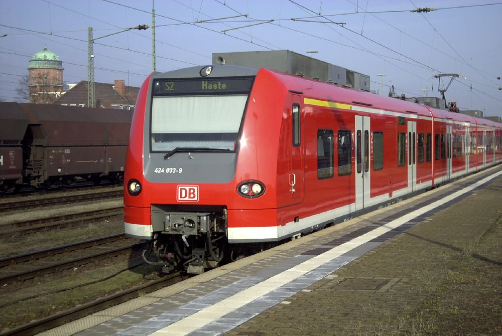
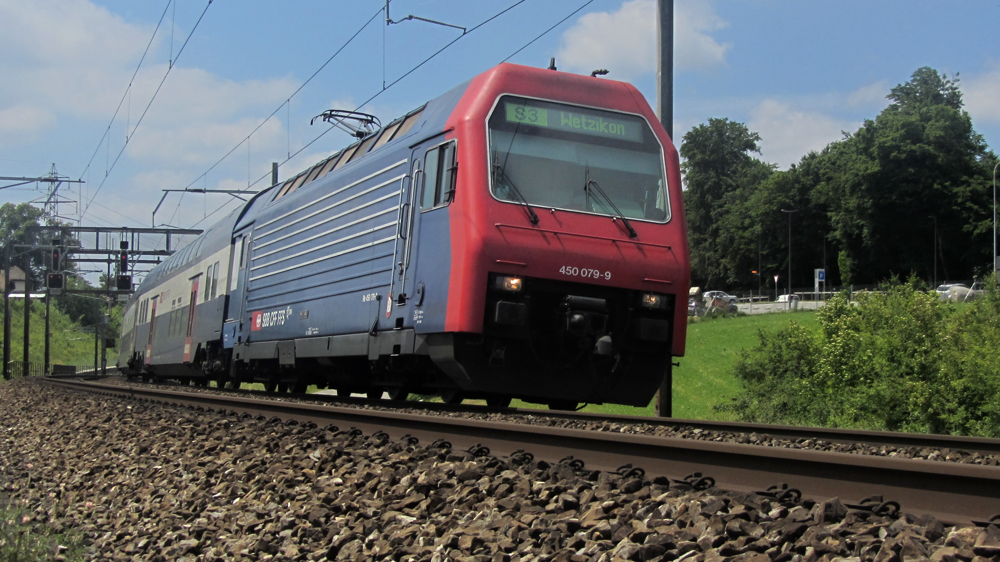

Ich möchte ein Video von Zügen aufnehmen und im Hintergrund viele Hintergrundfakten erzählen
DBAG Class 423 (DB-Baureihe 423)
https://upload.wikimedia.org/wikipedia/commons/e/ea/S-Bahn_Hannover_Type_424.jpg
SBB-CFF-FFS Re 450 (SBB Re 450)
https://upload.wikimedia.org/wikipedia/commons/9/97/SBB_Re_450.JPG